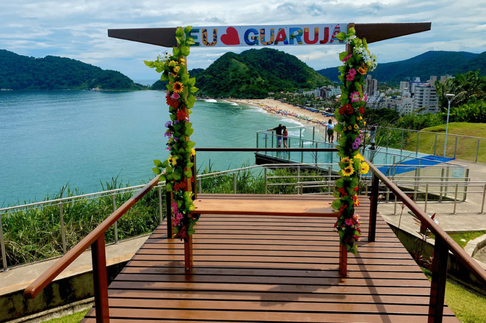

Guarujá
Conhecido como a “Pérola do Atlântico”, Guarujá encanta com suas praias deslumbrantes, como Praia de Pitangueiras, Praia da Enseada e Praia de Pernambuco.
A cidade é acessível por balsas e boas rodovias, além de uma infraestrutura completa que equilibra mar, cultura e lazer. Entre os destaques turísticos estão o Mirante da Campina (Morro do Maluf), com vista panorâmica da orla, e o Acqua Mundo, um dos maiores aquários da América do Sul.
Com uma história rica que remonta ao período colonial e à antiga indústria de óleo de baleia, Guarujá também preserva patrimônios como fortalezas históricas e o Ilha da Moela, onde se encontra um tradicional farol.
Além disso, o destino se destaca pela excelentes trilhas ecológicas que levam a praias mais preservadas, como a Praia do Éden e a Praia Branca. À noite, a cidade ganha vida com bares, quiosques e casas noturnas, tornando-se um destino completo para diferentes perfis de visitantes ao longo de todo o ano.
